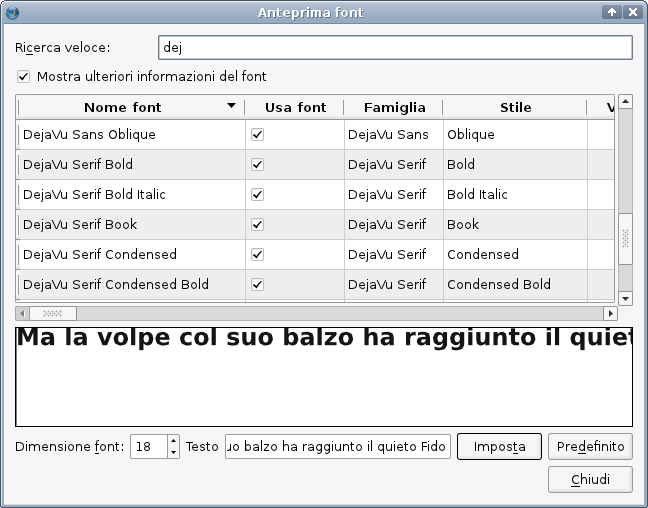

Un altro utile strumento incluso in Scribus è l'anteprima caratteri, che è ben più capace di quanto il suo nome suggerisca. Può essere utilizzata soltanto quando un documento è aperto, e si trova in Utilità > Anteprima font:
|  |
Come vedete, la finestra di dialogo mostra un elenco di tutti i caratteri disponibili. Quando un carattere viene selezionato, la sua anteprima appare nella parte inferiore della finestra. Potete sempre modificare la dimensione del carattere e il testo campione dell'anteprima, e poi ripristinare i valori predefiniti.
Se il numero dei caratteri installati è elevato, la funzione “Ricerca veloce” può rivelarsi molto utile, poiché permette di eseguire una ricerca tra i caratteri installati, ad esempio in base al nome del produttore (Adobe, Bitstream ecc.) o in base allo stile (ad esempio Corsivo). L'unica limitazione consiste nel fatto che Scribus esegue la ricerca soltanto tra i nomi dei caratteri; quindi se un certo carattere ha stile “Condensed”, ma la parola “Condensed” non fa parte del suo nome, una ricerca in base al termine “Condensed” non lo troverà.
Un'altra utile funzione dell'anteprima caratteri è l'opzione “Mostra ulteriori informazioni del font”, che non solo mostra le informazioni contenute nella scheda “Caratteri disponibili” in Impostazioni documento, ma fornisce anche un rapido accesso alle sue caratteristiche.
I caratteri sono spesso il punto in cui i problemi nel desktop publishing cominciano e finiscono. Sono una delle principali cause di problemi seri nella prestampa. Si può stimare che circa la metà delle segnalazioni di errore riguardanti i caratteri in Scribus derivino da difetti dei caratteri stessi. Inoltre, una tipica domanda posta dagli utenti è: “Scribus si rifiuta di usare il carattere X, ma le applicazioni Y e Z lo usano senza problemi. Perché?”
Fondamentalmente, Scribus è estremamente esigente per quanto riguarda i caratteri. Ogni volta che Scribus viene avviato, esegue un controllo (per “auto-difesa”) per verificare che i caratteri disponibili abbiano una codifica utilizzabile, siano scalabili e abbiano un nome Postscript correttamente incorporato. Quando un documento viene caricato, Scribus controlla in modo più approfondito i caratteri richiesti, per assicurarsi che tutti i glifi di un certo carattere siano accessibili. Se i glifi non possono essere letti correttamente, l'uso del carattere interessato viene disabilitato da Scribus. Questa è una caratteristica intenzionale e non un difetto! Probabilmente sono ben poche (o forse nessuna) le applicazioni che tollerano meno di Scribus i caratteri difettosi. Impedire l'uso di caratteri che potrebbero contenere difetti è senza dubbio essenziale per avere risultati affidabili. Questo forse può causare un po' di fastidio o di confusione per gli utenti finali, ma siate certi che evita molti potenziali problemi che potrebbero sorgere in seguito, come un file PDF che blocca un'unità di fotocomposizione quando dovete stampare 200.000 copie della copertina di una rivista. Situazioni di questo tipo nella vita reale possono provocare costi imprevisti che si misurano in centinaia, migliaia o milioni, a seconda della vostra moneta.
Se vi chiedete perché un carattere installato non compare in Scribus, potete avviare Scribus da linea di comando, dove potrebbe comparire un'avviso simile al seguente:
È inoltre importante notare che Scribus non crea “falsi” grassetti o corsivi. Questi sono il flagello degli addetti alla prestampa, ed è noto che possono creare problemi nella stampa in tipografia commerciale, poiché possono degradare la qualità del testo. Quindi Scribus non crea, ad esempio, una versione corsiva di un carattere, se il file del carattere corsivo è assente in una certa famiglia. Alcune applicazioni di impaginazione e di elaborazione testi lo fanno, e la presentano come una caratteristica utile; gli sviluppatori di Scribus hanno deciso consapevolmente di non dare al programma una tale capacità.
Non c'è scarsità di formati di file di caratteri nell'informatica moderna, dai caratteri bitmap (che sono tuttora usati in modalità linea di comando da tutti i sistemi operativi attuali, o, almeno parzialmente, dal sistema di composizione TeX e dai suoi derivati) ai cosiddetti “web fonts” (caratteri di cui non è necessaria la presenza sul computer, ma che vengono prelevati dai siti tramite link, proprio come avviene per le immagini). Ma nella stampa professionale soltanto tre tipi di caratteri hanno un ruolo. Essi sono i caratteri Postscript, TrueType e OpenType.
Caratteri di alta qualità sono essenziali per ottenere risultati affidabili, qualunque sia la piattaforma. Non è per snobismo se i professionisti della prestampa si mostrano molto scettici sull'uso di caratteri gratuiti o shareware. L'esperienza ha dimostrato che molti caratteri gratuiti non rispettano le normali specifiche tecniche per i caratteri, e non raramente essi hanno problemi come codifiche errate, nome Postscript mancante o formattato in modo errato, glifi con curve interrotte, e altri difetti. Creare caratteri affidabili e di buon livello per l'uso nella stampa professionale non è facile e richiede approfonditi controlli di qualità. Un esempio: la creazione del Verdana, che fa parte della raccolta di caratteri per il web della Microsoft, ha richiesto quasi un anno di lavoro.
Potete trovare un elenco di caratteri e fonti di caratteri affidabili sul wiki di Scribus. L'elenco viene aggiornato più o meno regolarmente.